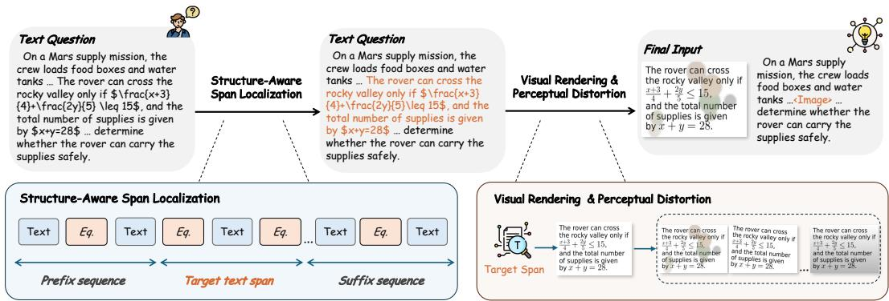

(c) LoMo enhances cross-modal alignment(c) LoMo enhances cross-modal alignment. Figure 1: Current Vision-Language Models exhibit carrier sensitivity driven by an underlying modality gap. (a) Carrier sensitivity across VLMs. Simply shifting identical semantic content from a text format to a visual format (rendering standard questions as images) causes consistent and significant accuracy drops across state-of-the-art models. (b) The physical manifestation of the modality gap. By measuring the pairwise cross-modal distance between the original text and its rendered-image counterpart, we observe a strict monotonic trend, where greater representational distance between the two carriers corresponds to more severe accuracy degradation. (c) LoMo enhances cross-modal alignment. Our method shifts the cross-modal distance distribution markedly toward smaller values, reducing the average distance by 14.2% compared to Standard SFT and yielding tighter cross-carrier alignment.这张图/表用于判断 LoMo 的实验收益来自哪里。重点看替换、消融或跨模型设置下趋势是否一致，而不是只看单个最高分。

Figureure 2 · : Overview of LoMoFigure 2: Overview of LoMo. LoMo reformulates a text-only instance into a text–image interleaved sequence through three stages. Structure-Aware Span Localization chunks the input in a formulaaware manner and selects a semantically coherent middle span as the target for visualization. Visual Rendering converts the target span into an image via content-aware routing between LaTeX and standard text renderers. The image is then perturbed by Perceptual Distortion and substituted back into the original position, forming a “text → visual carrier → text” instance.这张图概括 LoMo 的整体方法流程。阅读时先看模块之间传递的训练信号，再看作者如何把目标拆成可优化的子问题。